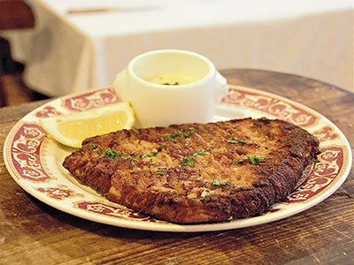

La Quenelle
La Cervelle des Canuts

Le Gâteau de Foie de Volaille

Lió és considerada el bressol de la cuina francesa. Això és gràcies a la riquesa i a la qualitat dels productes de la regió. A Lió la cuyina també és considerada un art,i tot va començar amb les MèresLyionnaises que eren les cuineres de les grans famílies burgeses que van inaugurar una tradició culinària. Oferien una cuina simple i refinada, aquesta és la base de la cuina lionessa. Els plats més típics són: